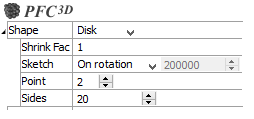
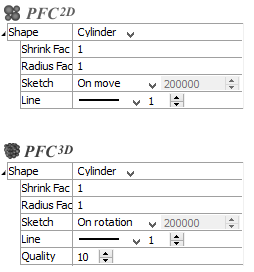
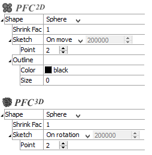
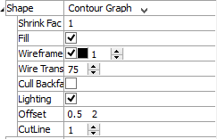
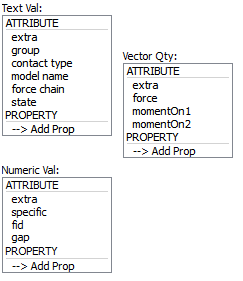
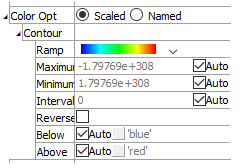
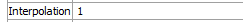
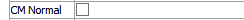

DFN 裂隙等值线
说明
在 DFN 裂隙上绘制力学接触数据的等值线。
此绘图项遵循形状/按…着色/颜色选项（Shape/Color By/Color Opt）模式来确定其渲染方式。
CS：此项目需在 PFC 中验证；程序错误导致无法检查属性列表的正确性
属性
形状
选择绘图项在渲染时采用的形状。初始选择（“圆盘”、“圆柱”、“球体”或“等值线图”）将决定后续出现哪些附加控制项。

选择“圆盘”会将绘图项渲染为圆盘，并带有以下附加控制项。

选择“圆柱”会将绘图项渲染为圆柱，并带有以下附加控制项。

选择“球体”会将项目渲染为球体，并带有以下附加控制项。

选择“等值线图”会将项目渲染为 ???，并带有以下子属性。
按…着色

指定要渲染该项目的哪一方面，从三个互斥分组中选择（同一时间每个分组中只有一项选择处于活动状态）：文本值、数值 和 矢量量。 若选择了 矢量量，则会新增一个字段，用于指定渲染矢量的是某个分量（\(x\)、\(y\) 或 \(z\)）还是其大小（mag）。
在选择器底部选择 -->Add Prop 将弹出一个对话框，用户可在其中指定要添加到列表中的新特性（并使其成为活动的 按…着色 选择）。
选择器上的 ATTRIBUTE 和 PROPERTY 字样不起任何作用；提供它们只是为了在视觉上区分这两个分组。
| 名称 | 说明 |
|---|---|
| extra | 按 extra 变量着色。额外提供一个字段，用于按索引标识该变量。 |
| 分组 | 按分组着色。额外提供一个字段，用于指定槽位索引。默认设置为 任意（它占据微调框上的索引位置 0）。 |
| 接触类型 | |
| 模型名称 | |
| 力链 | |
| 状态 |
| 名称 | 说明 |
|---|---|
| extra | 按 extra 变量着色。额外提供一个字段，用于按索引标识该变量。 |
| specific | |
| fid |
| 名称 | 说明 |
|---|---|
| extra | 按 extra 变量着色。额外提供一个字段，用于按索引标识该变量。 |
| 力 | |
| momentOn1 | |
| momentOn2 |
颜色选项
指定绘图项的着色选项。此项必须设为 scaled（等值线）着色，或基于 named 项目项的着色（例如分组名称）。前者是通过 按…着色 属性设置的数值或矢量项目的默认选项；后者是指定文本值时 按…着色 的默认设置。对文本值将 ColorOpt 设为“scaled”将导致不渲染任何内容。将数值或矢量量设为“named”会使数值范围内的值被视为各自独立的“名称”来着色，名称的数量由“max-names”子属性控制。
缩放

选择 scaled 时，着色由以下子属性控制。
等值线：用于控制等值线绘制选项的设置容器。
色带：设置用于渲染的颜色色带。五个选项按选择框中的显示顺序依次为：彩虹（蓝到红）、灰度、蓝-白-红、蓝-青-白-黄-红、绿-白-红。
最大值：自动（勾选 自动）或使用指定值（取消勾选 自动）设置颜色色带的最高值（右端）。高于 最大值 的值将用 高于 颜色填充。
最小值：自动（勾选 自动）或使用指定值（取消勾选 自动）设置颜色色带的最低值（左端）。低于 最小值 的值将用 低于 颜色填充。
间隔数：指定渲染时使用的颜色间隔数量；如果勾选 自动，此值默认为 8-16 之间的某个数字。
对数刻度：勾选后指定颜色间隔按对数间隔分布。
反转：勾选时反转颜色色带的颜色顺序。
低于：指定用于低于 最小值 的值的颜色。勾选 自动 时使用颜色色带的左端颜色。取消勾选时，由色板控件指定颜色。
高于：指定用于高于 最大值 的值的颜色。勾选 自动 时使用颜色色带的右端颜色。取消勾选时，由色板控件指定颜色。
命名

选择 named 时，着色由以下子属性控制。
最大名称数：指定要使用的最大名称数，以及相应的唯一颜色最大数量。若存在的唯一名称更多，则这些名称被赋予名称 unknown，并用单一颜色着色。默认值为 30。
名称控件：指定是否存在名称或颜色控件。当存在大量唯一名称（或颜色）时，为每种颜色提供控件会大幅降低渲染性能。取消勾选此选项后，可以高效地渲染大量唯一颜色。
颜色列表：若绘图项包含可选择的颜色项，则编辑框/微调框可用于指定渲染该项时要使用的颜色数量。此外，相邻按钮（全选、全不选、反选）将处于活动状态。若绘图项不包含可选择的颜色项，则这些控制项被禁用。在任何情况下，若存在颜色（颜色数 > 0），都可以展开此子属性以显示用于渲染绘图项的颜色列表。列表中的颜色块可用于更改所选位置的颜色。颜色块旁边的文本标签可编辑。若存在可选择的颜色项，列表中的每个颜色项都会以复选框开头，可用于显示（勾选）或隐藏（取消勾选）该项。
映射

根据所提供的设置变换绘图项的方向、位置或比例。例如，此属性允许将同一绘图项的多个不同可视化实例相邻渲染。
轴序：指定要使用的坐标变换，假定正常顺序为 {2D 中为 XY；3D 中为 XYZ}（例如，XZY 表示 Y 和 Z 坐标互换）。
平移：按指定的模型单位平移所渲染对象的 {2D 中为 \(x\) 和 \(y\)；3D 中为 \(x\)、\(y\) 和 \(z\)} 位置。
比例：将绘图项大小设为程序窗口大小的指定百分比。
分辨率

设置 ??? 的分辨率
插值

设置 ??? 的插值
所有接触

设置显示哪些接触。
所有接触：显示所有接触（勾选时。若取消勾选，则仅显示活动接触。
接触模型法向

设置接触模型法向的显示。若 形状 设为“箭头”，则此属性不可用。
接触模型法向：若存在接触模型法向，则显示它（勾选时）。否则显示接触法向。
透明度

设置绘图项的透明度。此设置不适用于二维模型对象。
透明度：为项目应用透明度（勾选时）。开启时，透明度设为默认值 70，并处于“锁定”状态。锁定时，可用的透明度范围被限制在 70（最低，略有透明）到 100（最高，完全不可见）。要访问完整的透明度取值范围（0-100），请按下锁形图标以“解锁”透明度范围；图标会随之改变（ ）。
使用帮助按钮可获取有关此特定属性的帮助。
注意
应当提醒用户：低于 70 的值往往“更不透明”得难以察觉，并且可能导致深度透视看起来奇怪或不正确。
图例
设置该项在绘图图例中的显示。所有绘图项至少都具有 标题 属性。
图例：在图例中显示（勾选）有关该绘图项的所有信息。
标题：在图例中显示（勾选）该绘图项的标题。“别名：”字段可用于为该绘图项指定自定义标题。
大小：设置图例中文本的大小。
字体：设置文本所用的字体面。
样式：设置文本样式（选项为常规、粗体、斜体、粗斜体）。
颜色：设置文本颜色。
| 这些内容对您有帮助吗？… | FLAC3D © 2019, Itasca | 原文更新于 2020 年 10 月 8 日 |
| 版权与免责声明 | ||